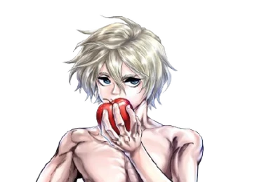

Guerreiros Confirmados
⚔️ Representantes da Humanidade

Adão
Pai da Humanidade
Época: Início dos Tempos
O arquivo número 1 da humanidade. Luta usando os Olhos do Senhor, sendo capaz de copiar perfeitamente qualquer golpe divino.

Lu Bu
O Herói Voador
Ano: 199 d.C. (Três Reinos)
O guerreiro mais forte da história humana. Possui uma força bruta descomunal e técnica capaz de dividir os céus.

Kojiro Sasaki
O Maior Perdedor da História
Ano: 1583 a 1612 (Período Edo)
Mestre da espada que evolui através da simulação mental de combate, prevendo com precisão os passos do inimigo.

Jack, o Estripador
A Malícia Encarnada
Ano: 1888 (Era Vitoriana)
O assassino mais infame de Londres. Utiliza táticas furtivas, mentiras e transforma tudo o que toca em arma divina.

Raiden Tameemon
O Rikishi Sem Igual
Ano: 1767 - 1825 (Período Edo)
O maior lutador de Sumô de sempre. Detém os músculos mais destrutivos e hiperdesenvolvidos da história.

Buddha
O Iluminado
Época: Século V a.C.
Alcançou a iluminação sozinho e escolheu lutar pelos mortais. Consegue ver o fluxo do destino e a iluminação da alma.

Qin Shi Huang
O Primeiro Imperador
Ano: 221 a 210 a.C. (Dinastia Qin)
O homem que unificou a China. Enxerga as estrelas de energia (Ki) dos oponentes para enfraquecer seus golpes.

Nikola Tesla
O Filho Pródigo da Ciência
Ano: 1856 - 1943 (Era Moderna)
O único mago da história que não usa magia, mas sim a ciência pura através da sua armadura mecânica automatizada.

Rei Leônidas
O Maior Rebelde de Esparta
Ano: 480 a.C. (Grécia Antiga)
Líder dos lendários 300 espartanos. Entra na arena movido pelo ódio aos deuses e empunhando um escudo mutável.

Okita Souji
O Capitão do Shinsengumi
Ano: 1842 - 1868 (Bakumatsu)
O prodígio da espada do Japão. Um espadachim feroz que leva o seu próprio coração ao limite para atingir velocidade extrema.

Simo Häyhä
A Morte Branca
Ano: 1905 - 2002 (Guerra de Inverno)
O maior franco-atirador da história militar. Luta camuflado na neve com seu rifle de precisão e paciência absoluta.

Sakata Kintoki
O Herói de Ouro
Época: Período Heian
Uma lenda folclórica dotada de uma força monstruosa e um coração puro, convocado para o combate da 12ª rodada.
🛡️ Valquírias

Brunhilde
1ª Irmã (Líder)
Mente por trás do torneio.
Guia a humanidade.

Randgriz
4ª Irmã
Parceiro: Lu Bu
Arma: Alabarda Sky Piercer

Reginleif
7ª Irmã
Parceiro: Adão
Arma: Soco-Inglês

Hrist
2ª Irmã
Parceiro: Kojiro Sasaki
Arma: Katana Dupla

Hlökk
11ª Irmã
Parceiro: Jack, o Estripador
Arma: Luvas Divinas

Thrud
3ª Irmã
Parceiro: Raiden
Arma: Mawashi Divino

Alvitr
10ª Irmã
Parceiro: Qin Shi Huang
Arma: Armadura de Ombro

Gôndul
9ª Irmã
Parceiro: Nikola Tesla
Arma: Traje Automaton β

Geiravör
5ª Irmã
Parceiro: Rei Leônidas
Arma: Escudo Mutável

Geirölul
6ª Irmã
Parceiro: Simo Häyhä
Arma: Rifle de Precisão Divino

Kuraqu
12ª Irmã
Parceiro: Okita Souji
Arma: Katana Onislayer Divina

Regingleif
8ª Irmã
Parceiro: Sakata Kintoki
Arma: Machado de Ouro Celestial
⚡ Deuses

Thor
O Deus do Trovão
O guerreiro mais forte de Asgard. Empunha as luvas Járngreipr e o lendário martelo esmagador Mjolnir.

Zeus
O Pai do Cosmos
Presidente do Conselho dos Deuses. Detém o controle total do tempo e a devastadora forma física Adamas.

Poseidon
O Tirano dos Mares
O deus mais arrogant e perfeito do panteão grego. Ataca com uma velocidade de tridente inalcançável.

Hércules
O Deus da Fortitude
Ascendeu à divindade através da sua justiça. Utiliza os 12 Trabalhos para alterar a forma da sua clava em combate.

Shiva
O Deus da Destruição
Líder do panteão hindu. Conhecido pelos seus quatro braços e pelo ritmo de dança imprevisível que incendeia o corpo.

Zerofuku
O Deus da Fortuna Invertida
A fusão dos Sete Deuses da Sorte. Absorve a infelicidade do mundo e a transforma em uma enorme clava mutável movida por puro rancor.

Hajun
O Rei Demônio do Sexto Céu
Uma entidade lendária do Submundo que renasceu destruindo o corpo de Zerofuku. Possui força monstruosa e braços que viram brocas e lâminas físicas.

Hades
O Rei do Submundo
O soberano do Helheim. Lutou no torneio para vingar o seu irmão Poseidon, utilizando o sangue para fortalecer a lança.

Beelzebub
O Senhor das Moscas
Uma divindade sombria e amaldiçoada da Filístia. Manipula ondas de alta frequência vibratória para ataque e defesa absoluta.

Apollo
O Deus do Sol
A divindade da beleza e das artes. Domina fios de luz divinos e um arco capaz de disparar flechas à velocidade da luz.

Susanoo-no-Mikoto
O Deus da Tormenta
O maior espadachim dos céus. Unificou todos os estilos de corte criados pela humanidade na espada divina Shinkage.

Loki
O Deus da Trapaça
Astuto, sádico e imprevisível. Utiliza correntes mágicas ocultas e portais de illusions para enganar os rivais.

Odin
O Pai de Todos
Líder supremo de Asgard. Uma divindade envolta em mistério que emana uma aura opressora de morte pura.
Placar: Lutas do Ragnarok
Histórico de Confrontos
Lu Bu VS Thor
⏱️ 16min 28sUm confronto de força bruta pura. Lu Bu conseguiu aguentar os golpes de Thor e até feri-lo, mas após o despertar do Mjolnir, as pernas do humano quebraram sob a pressão. Lu Bu foi superado pelo poder devastador do deus.
Adão VS Zeus
⏱️ 07min 13sUsando os "Olhos do Senhor", Adão copiou todos os golpes de Zeus. Zeus ativou a forma "Adamas" numa batalha extrema de desgaste. Os olhos de Adão estouraram, mas ele continuou socando, morrendo de pé por puro amor aos filhos.
Kojiro Sasaki VS Poseidon
⏱️ 13min 07sPoseidon atacou com velocidade assustadora, enquanto Kojiro previa os movimentos mentalmente. Após ter a espada quebrada, seu Volundr se dividiu em duas espadas, permitindo-o evoluir seu estilo e fatiar o Deus dos Mares.
Jack, o Estripador VS Hércules
⏱️ 26min 57sNuma Londres artificial, Jack revelou que seu verdadeiro Volundr eram suas luvas, que transformavam tudo em arma divina. Usando armadilhas e mentiras, enganou e empalou Hércules com as próprias mãos em sangue divino.
Raiden Tameemon VS Shiva
⏱️ 12min 14sRaiden liberou seus músculos e destruiu dois braços de Shiva. Porém, o líder hindu ativou sua Dança Oculta Incendiária, queimando seu corpo para ganhar velocidade e desferir chutes de chamas letais.
Buddha VS Zerofuku / Hajun
⏱️ 21min 37sBuddha lutou pelos humanos e salvou Zerofuku, mas o corpo do deus foi tomado pelo Rei Demônio Hajun. Buddha perdeu um olho, mas fundiu sua arma com a alma de Zerofuku para cortar Hajun ao meio.
Qin Shi Huang VS Hades
⏱️ 22min 28sHades buscou vingança por Poseidon com estocadas brutais. Qin Shi Huang, enxergando o fluxo de energia (Ki), redirecionou a força do deus. Mesmo perdendo um braço, quebrou a lança divina de Hades e o venceu.
Nikola Tesla VS Beelzebub
⏱️ 18min 06sTesla usou uma armadura mecânica de alta tecnologia, criando gravidade zero e se teletransportando. Porém, o intelecto sombrio e as vibrações destrutivas de Beelzebub decifraram a ciência, superando Tesla.
Leonidas VS Apollo
⏱️ 09min 31sO Rei de Esparta enfrentou o Deus do Sol com um escudo mutável acorrentado. Apollo ativou seu arco de luz na velocidade da luz. Leonidas contra-atacou ferindo o deus, mas teve seu escudo estilhaçado no impacto final.
Okita Souji VS Susanoo-no-Mikoto
⏱️ 15min 23sDuelo épico de esgrima nas ruas de Kyoto reconstruídas na arena. Susanoo demonstrou o tempo e corte do vácuo, mas Okita levou seu coração doente ao limite máximo, atingindo velocidade divina para vencer.
Simo Häyhä VS Loki
⏱️ 19min 42sO Deus da Trapaça tentou estraçalhar o casaco branco de Simo criando centenas de ilusões. Porém, demonstrando uma paciência divina e audição absoluta, o Franco-Atirador calculou a trajetória real através do som dos passos e disparou uma bala de Volundr certeira, atravessando a cabeça de Loki.